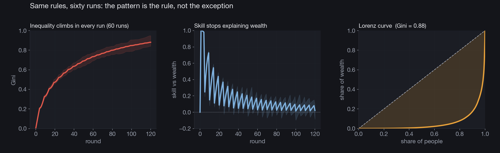

Personal project
Compounding and inequality
A very cheap model, and the thing it kept telling me.
A while ago I got stuck on a simple question. If everyone starts with the same amount of money, and the only thing that separates people is a bit of luck or skill that gets handed out fresh every few years, how unequal can a society really become? The honest answer surprised me. Very unequal, and fast.
The story we usually tell is that wealth tracks merit. Work hard, do well, end up ahead. I wanted to see what the arithmetic says when you strip almost everything else away and keep only one ingredient: money grows in proportion to how much you already have.
The setup fits on a napkin
A thousand people, everyone holding one coin. Each round a person's wealth is multiplied by (1 + t), where t is their return for that round, drawn from a normal distribution centered on a small positive number. Most people grow a little, some grow a lot, a few shrink. Every five rounds I throw all the values of t back in a hat and deal them out again, so nobody keeps a permanent edge.
That last part is the one I care about. It is my crude way of saying that talent and luck reset between generations. The person who drew well this decade does not get to keep that draw forever. If meritocracy were the whole story, resetting the advantage so often should keep things reasonably fair.
Watch it run
The top panel starts as a single spike, everyone equal, and then it spreads and keeps spreading. By the end the distance between the poorest and the richest is several orders of magnitude, and remember that axis is already logarithmic.
The bottom left tracks the Gini coefficient, the usual one number summary of inequality. Zero means everyone holds the same, one means a single person holds everything. It climbs past 0.8 and keeps going. For comparison, the most unequal countries on the planet sit around 0.6.
The bottom right is the panel I find hardest to argue with. It asks whether your skill this round explains your wealth. After every reshuffle it jumps back up, because the fresh draw briefly matters, and then it falls almost to the floor. The people at the top are rarely the ones with the best current skill. They are the ones who caught a good draw early and let compounding carry it.
It happens every time
One run could be a fluke, so I ran sixty of them with different random seeds and averaged the result. The shaded bands show the full spread across runs. Inequality climbs in all of them, the skill signal decays in all of them, and the final Lorenz curve bows away from the line of equality in a way that should feel familiar to anyone who has seen real wealth data.

What I take from it
I am not claiming this proves anything about the real world on its own. It is a toy, and a cheap one. Real economies have wages, taxes, debt, inheritance, crashes, and a hundred things this model leaves out. What it does well is smaller and sharper. It shows that you can manufacture extreme inequality without any of the usual villains. No corruption, no cheating, no dynasties, no unfair head start. Equal beginnings, fair and temporary advantages, and a single rule about compounding are enough to do the whole job.
So when someone tells me the people at the top must have earned their place, I now keep a small and stubborn counterexample in my pocket. In this little world they did nothing wrong and nothing special. The mathematics of growth handed them the lead, and the same mathematics kept them there. If we want a different ending, something has to push back on the compounding on purpose. How much pushing, and what kind, is the question I want to carry into the next version of the model.
The whole thing is one Python file. You can read the model, the animation, and the figures in inequality_model.py.